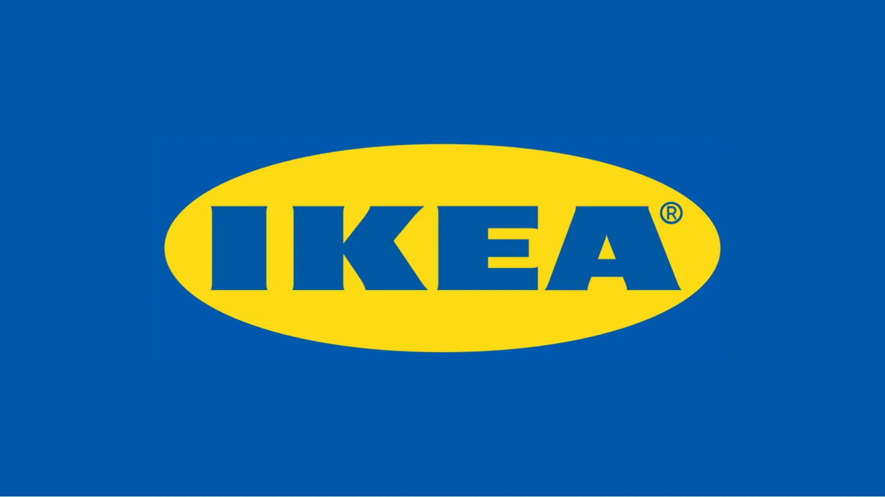
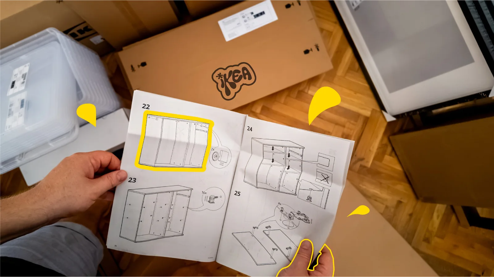

ÉcoleIdentité visuelle
IKEA, version psychédélique
Le brief : retravailler l'identité visuelle d'une marque et sa communication selon un courant artistique. J'ai choisi le rétro-psychédélique des années 70, mêlé au bubble street art.
- Identité visuelle
- Logo
- Direction artistique
- Social media



